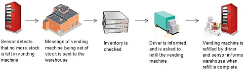

Over the next decade, Machine to Machine (M2M) is projected to revolutionize businesses across various industry verticals as it is being estimated that there will be more than 25 billion connected devices around the world by 2020.
M2M enables devices to communicate with other devices or central management applications, providing real-time monitoring and control without human intervention.
M2M communication is typically composed of a device to capture an event that is relayed through a network to an application that translates the captured event into meaningful information.
The figure above shows how an M2M application reports vending machine inventory status to the warehouse when it is out of stock.
Every vertical in business be it Automotive, Smart Metering, Transportation, Healthcare, Industrial and Remote Monitoring can benefit big from Machine-to-Machine.
And we're making it simple with our expert services that give easy, cost-effective access to the power of connected devices and underlying technology.
Enterprises understand that M2M ecosystem is complex and fragmented across different industries. We have created best in class Professional Services that are designed to support our customers throughout the M2M project life cycle to reduce complexity and time to market.
iQuent works in close collaboration with its customers to analyze their specific business needs, and help them in choosing right service provider and the platform, capable of delivering essential requirements for their project, including reliable network connectivity, robust service platform, low cost and effective application integration.
Our Platform Integration Services cover end to end integration, testing and rollout of the M2M Products and Services. It includes technical design, connectivity, platform configuration customised to suit different market conditions, and integration with other platforms e.g. provisioning, billing, service platforms etc., testing and rollout of M2M Products and Services.
Service Design and Delivery
iQuent understands that having a service wrapper around a product or solution is equally important for enterprises to effectively operate and manage the platform bringing operational efficiency and service improvements.
We take an end-to-end approach on Service Design and Delivery, supporting customers all the way from Requirement Analysis, Service Design, to Delivery and Rollout.
M2M projects are becoming more strategic, more complex and larger in scope, teeing up the need for the effective project management and the advanced solution design and implementation skills.
Solution Design
iQuent uses its M2M expertise to design M2M solutions customized for customer specific business needs. Our solution experts help customers in designing the innovative M2M solutions in the most cost effective and fastest way, meeting customer requirements.
Solution Implementation
Our Onboarding Service offers smooth journey to customers from initial engagement, design validation, managing solution implementation, to test and trial, launch and BAU handover for M2M solutions.
We provide Operational Support for M2M service and solutions during the project phase as well as in-life. It includes support on provisioning, billing, in-life changes, answering customer product queries, training customers on new features, release management and service management.
iQuent brings together its distinct capabilities - M2M domain expertise, an outstanding customer experience and a track record of quality and success, which means our customers receive unmatched services & an excellent customer experience and benefit from proven expertise.
iQuent's value add:
Competitive Advantage: iQuent helps its customers to discover the competitive advantage that this new technology can bring to their organization.
iQuent has years of experience in enabling enterprises to sell M2M solutions and services, and take advantage of the rapidly growing business opportunities presented by M2M.
End to End Service: can help customers manage all aspects of an M2M service including support on decision making while selecting a service provider and the platform, integration and rollout enabling enterprises to sell M2M service, solution design and validation for their end customers, provisioning, billing and support.
Quality Assurance and Testing: iQuent follows a rigorous approach for quality assurance and testing to ensure quality service and identify any potential issues up-front prior to customer rollout.
Experienced and Dedicated Team: We have an experienced, dedicated team of technical architects, solution consultants, service design & delivery managers, and industry experts to support our customers every step of the customer journey.
Leading the Way: We have a track record of success in delivering our customer's prominent and successful M2M projects. These projects have transformed operations and driven new business models for our customers.